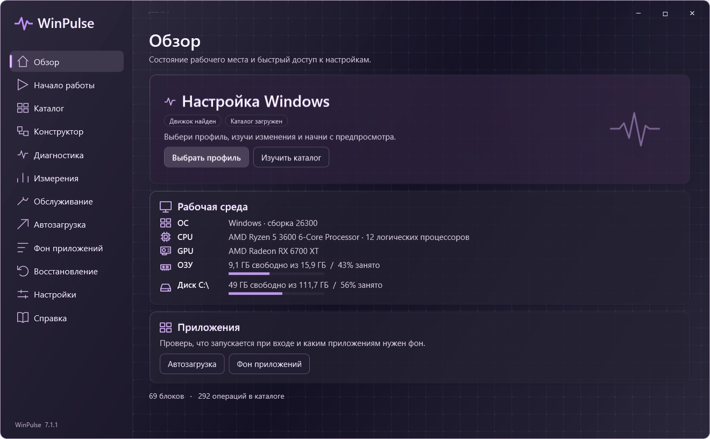

Предпросмотр изменений
Dry-run покажет план, пропуски и блокировки до применения настроек.
Настрой Windows 10 и 11 под своё железо. Изучи каждое изменение, проверь план и сохрани путь к откату.
Windows x64 · GPL-3.0-only
Dry-run покажет план, пропуски и блокировки до применения настроек.
Движок сохраняет исходные значения реестра и состояние служб. Верни целую сессию или отдельную группу.
Собери профиль из отдельных блоков. В каталоге видны параметры и уровень риска каждой операции.
Проверь железо, состояние дисков и программы, которые стартуют вместе с Windows.
Окно работает от пользователя. Движок запрашивает Admin и отдельно обрабатывает ветки, защищённые TrustedInstaller.
Исходники интерфейса и движка доступны по GPL-3.0-only. Каждый модуль можно изучить и собрать локально.
WinPulse определяет сборку Windows, железо и ограничения.
Выбираешь блоки и проверяешь план в dry-run.
Движок сохраняет состояние и запрашивает подтверждения.
Сравниваешь замеры и при необходимости откатываешь группу.
Windows 10 22H2 (сборка 19045) и Windows 11 x64. Для интерфейса рекомендуется .NET Framework 4.8, движок использует Windows PowerShell 5.1.
Автор отбирал операции вручную и проверял WinPulse на своей машине. Каталог разделён на SAFE, WARN, DANGER и EXP. Профиль Maximum включает блоки DANGER. Гварды учитывают конфигурацию ПК, а экспериментальные изменения стоит проверять по одному.
WinPulse восстанавливает сохранённые значения выбранной сессии из папки Backups. Для отдельных групп есть выборочный откат. Удалённые файлы и некоторые пакеты приложений требуют отдельного восстановления.
SmartScreen учитывает репутацию загрузки и издателя. Срабатывание Defender требует отдельной проверки. Сверь SHA-256 архива с релизом и изучи имя обнаружения перед запуском.